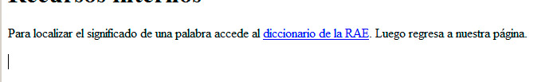
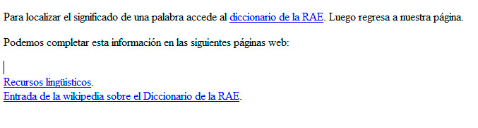

Para crear un enlace, necesitaremos también decidir qué parte de nuestra página será el enlace. Normalmente utilizaremos una palabra, una frase o una imagen, de forma que cuando el usuario haga clic en ese punto, el navegador le llevará a su nuevo destino.
Para crear un enlace utilizamos la etiqueta <a> y el parámetro href para indicar la dirección a la que queremos acceder. Este elemento también cuenta con una etiqueta de cierre </a>, de modo que todo lo que queda dentro será el contenido sobre el que el usuario podrá hacer clic.
Observe este ejemplo:
<p>Para localizar el significado de una palabra, accede al <a href=”http://buscon.rae.es”>diccionario de la RAE</a>. Luego regresa a nuestra página.</p>
Trasladado a una página web, se obtiene el resultado de la figura

El texto comprendido entre <a> y </a> se convierte en un enlace que nos traslada a la página indicada.
Nota
Como comentamos, no tiene por qué ser una frase o una palabra. Podemos convertir en un enlace párrafos enteros, imágenes y otros muchos elementos HTML. Basta con incluirlos dentro de las etiquetas <a>.
La dirección indicada debe estar siempre completa y no contener errores. Por ello lo más recomendable es localizar previamente la dirección mediante un buscador, para después copiarla desde la barra de direcciones y pegarla en nuestro editor. Debemos pensar que las direcciones no son siempre tan sencillas como en el ejemplo anterior; más bien sucede lo contrario, cuando enlazamos con páginas interiores de un sitio web. Aquí tenemos un ejemplo totalmente distinto:
<p>Podemos completar esta información en las siguientes páginas web: </p>
<br><a href=”http://www.rae.es/rae/gestores/gespub000020.nsf/voTodosporId/2CDF85BBF055C349C1257168003A3E51?OpenDocument”>Recursos lingüisticos</a>.
<br><a href=”http://es.wikipedia.org/wiki/Diccionario_de_la_lengua_espa%C3%B1ola”>Entrada de la wikipedia sobre el Diccionario de la RAE</a>.
<p></p>
La figura siguiente recoge la apariencia de esa porción de HTML.

Como resulta natural, es difícil reproducir manualmente esas direcciones; así que copiaremos y pegaremos todo lo que sea posible.
Pregunta Verdadero-Falso
Verdadero Falso